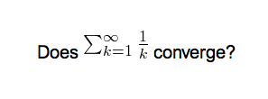
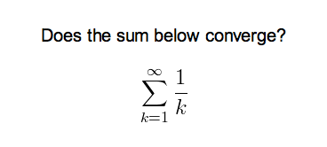

Matematika va belgilar
MathJax
MathJax — brauzerga asoslangan zamonaviy terish tizimi, matematik va kimyoviy tenglamalar uchun foydali. U hech qanday qoʻshimcha dastur oʻrnatishni talab qilmaydi, shuning uchun foydalanish oson va koʻpchilik foydalanuvchilarga tavsiya etiladi.
MathJax Anki 2.1+, AnkiMobile va AnkiDroid 2.9+ da qoʻshimcha sozlamasiz qoʻllab-quvvatlanadi.
Sinab koʻrish uchun:
- Maydonga quyidagini yozing:
\sqrt{x}
-
Hozir yozgan matningizni belgilang.
-
Muharrirdagi eng oʻng tugmani bosing va menyudan "MathJax inline" (MathJax qator ichida) ni tanlang. Anki matnni quyidagi koʻrinishga oʻzgartiradi:
\(\sqrt{x}\)
-
Cards... (Kartalar...) tugmasini bosing. Tenglama karta takrorlanganda qanday koʻrinishini oldindan koʻrasiz.
$$ \sqrt\{x\} $$Anki'ning MathJax qoʻllab-quvvatlashi mazmunni TeX formatida kutadi. TeX formatlashi bilan tanish boʻlmasangiz, shu qisqa qoʻllanmaga qarang. Shuni yodda tutingki, 1-band Anki'da qoʻllanmaydi — Anki qator ichidagi tenglamalar uchun
\(va\)dan, alohida koʻrsatiladigan tenglamalar uchun esa\[va\]dan foydalanadi.
MathJax ifodasida yangi qatordan foydalanmoqchi boʻlsangiz, oddiy Enter oʻrniga Shift+Enter dan foydalaning, chunki oddiy yangi qator MathJax toʻgʻri ishlashiga xalaqit beradi.
Anki kimyoviy tenglamalarni koʻrsatish uchun mhchem'ni oʻz ichiga olgan holda qoʻllab-quvvatlaydi. Koʻproq maʼlumot uchun "chemical equations" (kimyoviy tenglamalar) boʻlimi va undan keyingi boʻlimlarga qarang: https://mhchem.github.io/MathJax-mhchem/
Customize MathJax (MathJax'ni moslashtirish)
Anki'ga oʻrnatilgan MathJax qoʻllab-quvvatlashi karta mazmunidan oldin yuklanadi, shuning uchun MathJax'ni moslashtirmoqchi boʻlsangiz, buni maxsus usulda qilishingiz kerak. Bu yerda misol keltirilgan.
<script>
MathJax.config.tex['macros'] = {
R: '{\\mathbb {R}}',
};
if (typeof is_already_run == 'undefined') {
is_already_run = true
MathJax.startup.getComponents();
}
</script>
Anki'da cloze deletion'lar uchun maxsus mantiq bor, u MathJax tenglamalarining standart ajratuvchilarini oʻzgartirsangiz, ishlamasligi mumkin.
LaTeX
LaTeX — kuchli terish tizimi, matematik formulalar, kimyoviy formulalar, musiqiy notalar va hokazolarni kiritish uchun foydali. Anki LaTeX uchun baʼzi qoʻllab-quvvatlashni taqdim etadi, yozuvlaringizga LaTeX kodini kiritish imkonini beradi. Kartani takrorlaganingizda, Anki LaTeX'ni chaqiradi va oʻrniga hosil qilingan rasmni koʻrsatadi.
LaTeX'ni sozlash koʻproq ish talab qiladi va rasmlar faqat Anki'ning kompyuter versiyasida yaratilishi mumkin — garchi yaratilgandan keyin rasmlarni mobil klientlar koʻrsata olsa ham. LaTeX keltiradigan qoʻshimcha murakkablik sababli, u faqat MathJax taqdim etganidan koʻproq imkoniyat kerak boʻlgan foydalanuvchilarga tavsiya etiladi.
Enable LaTeX (LaTeX'ni yoqish)
LaTeX kodi kompyuteringizdagi Anki'ga tegishli boʻlmagan maʼlumotlarni oʻqish yoki yozishi mumkin boʻlgan zararli buyruqlarni oʻz ichiga olishi mumkin. Shu sababli, Anki'ning soʻnggi versiyalari standart holatda LaTeX rasmlarini yaratishdan bosh tortadi.
Ulashilgan toʻplamlardan foydalansangiz yoki kelajakda ulashilgan toʻplamlarni import qilishni rejalashtirsangiz, bu variantni yoqmaslikni qatʼiy tavsiya qilamiz, chunki shunda har qanday ulashilgan toʻplam muallifiga kompyuteringizga kirish imkonini berib qoʻyishingiz mumkin.
LaTeX'dan oʻz kartalaringizda foydalanmoqchi boʻlsangiz, sozlamalar ekranida Generate LaTeX images (LaTeX rasmlarini yaratish) variantini yoqishingiz kerak.
Ulashilgan toʻplamlar uchun bu variantni yoqishingiz shart emas. Ulashilgan toʻplam muallifi toʻplamni ulashishdan oldin barcha rasmlarni toʻgʻri yaratgan boʻlsa, rasmlar allaqachon mavjud boʻlishi kerak.
Assumed Knowledge (Taxmin qilingan bilimlar)
Anki'ning LaTeX qoʻllab-quvvatlashi "kalitni burab ishga tushiradigan" emas: siz LaTeX'dan qanday foydalanishni allaqachon bilasiz va uni oʻrnatgansiz deb taxmin qilinadi. LaTeX bilan tajribangiz boʻlmasa, internetdagi koʻp qoʻllanmalardan biriga murojaat qiling. Belgilash bilan bogʻliq qiyinchiliklaringiz boʻlsa, iltimos, LaTeX forumida soʻrang.
LaTeX'ni oʻrnatish uchun Windows'da MiKTeX, macOS'da MacTeX, Linux'da esa distributivingizning paket menejeridan foydalaning. Dvipng ham oʻrnatilgan boʻlishi kerak.
Windows'da MikTeX'ning texnik xizmat oynasidagi Settings (Sozlamalar) ga oʻtib, "Install missing packages on the fly" (Yetishmayotgan paketlarni darhol oʻrnatish) "Ask me first" (Avval mendan soʻrang) emas, "Always" (Doim) ga qoʻyilganiga ishonch hosil qiling. Qiyinchiliklar davom etsa, bir foydalanuvchi barcha paketlar yuklab olinguncha Anki'ni administrator sifatida ishga tushirish yordam bergani haqida xabar bergan.
macOS'da LaTeX faqat MacTeX va BasicTeX bilan sinovdan oʻtkazilgan. BasicTeX'dan foydalansangiz, dvipng'ni quyidagi buyruq bilan alohida oʻrnatishingiz kerak:
sudo tlmgr update --self; sudo tlmgr install dvipng
Buyruq yoʻlda (path) boʻlmasligi mumkin, shuning uchun toʻliq yoʻlni kiritishingiz kerak boʻlishi mumkin, masalan /usr/local/texlive/2014basic/bin/x86_64-darwin/tlmgr.
Yuqoridagi LaTeX paketlaridan foydalanmasangiz, latex va dvipng ning toʻliq yoʻlini koʻrsatish uchun edit LaTeX qoʻshimchasidan foydalanishingiz kerak boʻladi.
Web/Mobile (Veb/mobil)
LaTeX bor kartani takrorlaganingizda, Anki oʻsha LaTeX uchun rasm yaratadi va kelajakda foydalanish uchun rasmni kolleksiyangizning media jildiga joylaydi. Veb va mobil klientlar bu rasmlar allaqachon mavjud boʻlsa, ularni koʻrsatadi, lekin rasmlarni oʻzlari yarata olmaydi.
Boshqa klientlarda oʻqishdan oldin barcha kartalaringizni kamida bir marta takrorlashga majbur boʻlmaslik uchun Anki rasmlarni siz uchun koʻp miqdorda yarata oladi. Barcha rasmlarni yaratish uchun Tools>Check Media (Asboblar>Mediani tekshirish) ga oʻting. Shundan keyin sinxronlash yaratilgan mediani AnkiWeb va boshqa klientlarga yuklashi kerak.
Example (Misol)
LaTeX mazmunini kiritishning eng umumiy usuli — uni [latex][/latex] teglari bilan oʻrab olish. Buning uchun muharrir boʻlimida tasvirlangan yorliq tugmasi bor.
[latex] teglaridan maydon ichida foydalanish kerak — ularni karta shabloniga qoʻysangiz, muammolar chiqadi.
Masalan, Anki flesh-kartasining old tomoniga quyidagini kiritsangiz:
Does [latex]\begin{math}\sum_{k = 1}^{\infty}\frac{1}{k}\end{math}[/latex] converge?
flesh-karta koʻrilganda mana bu hosil boʻladi:

Yuqoridagi misoldagi formula "matn formulasi" (text formula) deb ataladi, chunki u matematik boʻlmagan matn ichida koʻrsatiladi. Aksincha, quyidagi misol "alohida koʻrsatiladigan formula" (displayed formula) ni koʻrsatadi:
Does the sum below converge?
[latex]\begin{displaymath}\sum_{k = 1}^{\infty}\frac{1}{k}\end{displaymath}[/latex]

"Matn formulalari" va "alohida koʻrsatiladigan formulalar" LaTeX ifodalarining eng keng tarqalgan turlari, shuning uchun Anki ularning qisqartirilgan versiyalarini taqdim etadi. Quyidagi shakldagi ifodalar:
[latex]\begin{math}...\end{math}[/latex]
quyidagicha qisqartirilishi mumkin
[$]...[/$]
va quyidagi shakldagi ifodalar
[latex]\begin{displaymath}...\end{displaymath}[/latex]
quyidagicha qisqartirilishi mumkin
[$$]...[/$$]
Masalan, avval koʻrsatilgan ikkita LaTeX parchasi quyidagilarga teng
Does [$]\sum_{k = 1}^{\infty}\frac{1}{k}[/$] converge?
va
Does the sum below converge?
[$$]\sum_{k = 1}^{\infty}\frac{1}{k}[/$$]
mos ravishda.
Packages (Paketlar)
Anki LaTeX preambulasini moslashtirish imkonini beradi, shunda kimyo, musiqa va hokazolar uchun maxsus paketlarni import qilishingiz mumkin. Masalan, internetda chemtex uchun namuna faylni topdingiz deylik:
\documentclass[a4paper,12pt]{report}
\usepackage{chemtex}
\begin{document}
\initial
\begin{figure}[h]\centering
\parbox{.3\textwidth}{\ethene{H}{H$_3$C}{CH$_3$}{Br}}
\hfil
\parbox{.3\textwidth}{\cbranch{H}{S}{H}{S}{C}{S}{}{S}{H}
\xi=-200 \cright{}{Q}{C}{D}{O}{S}{OH}}
\hfil
\parbox{.3\textwidth}{\hetisix{Q}{Q}{Q}{Q}{Q}{Q}{O}{Q}{O}
\xi=-171 \fuseup{Q}{Q}{Q}{Q}{D}{Q}{D}{Q}{D}}
\caption{Chemie mit {\tt CHEMTEX}\label{a1}}
\end{figure}
\end{document}
Avvalo, paketni oʻrnatish uchun paket va MiKTeX/MacTeX hujjatlariga amal qiling. Paket ishlayotganini tekshirish uchun yuqoridagi kabi kodni .latex faylga qoʻyib, uni buyruq satridan kompilyatsiya qila olishingizni sinab koʻrishingiz kerak. Paket mavjud va ishlayotganini tasdiqlaganingizdan keyin, uni Anki bilan birlashtirishimiz mumkin.
Paketni Anki bilan ishlatish uchun asosiy oynada "Add" (Qoʻshish) ni, keyin yozuv turini tanlash tugmasini bosing. "Manage" (Boshqarish) tugmasini bosing, keyin ishlatmoqchi boʻlgan yozuv turini tanlab, "Options" (Sozlamalar) ni bosing. LaTeX sarlavhasi (header) va pastki qismi (footer) koʻrsatiladi. Sarlavha quyidagiga oʻxshash koʻrinadi:
\documentclass[12pt]{article}
\special{papersize=3in,5in}
\usepackage{amssymb,amsmath}
\pagestyle{empty}
\setlength{\parindent}{0in}
\begin{document}
chemtex'dan foydalanish uchun oldingi misoldagi usepackage qatorini qoʻshasiz, shunda u quyidagicha koʻrinadi:
\documentclass[12pt]{article}
\special{papersize=3in,5in}
\usepackage{amssymb,amsmath}
\usepackage{chemtex}
\pagestyle{empty}
\setlength{\parindent}{0in}
\begin{document}
Shundan keyin Anki kartalaringizga quyidagiga oʻxshash qatorlarni kiritishingiz kerak:
[latex]\ethene{H}{H$_3$C}{CH$_3$}{Br}[/latex]
Template Conflicts (Shablon ziddiyatlari)
Anki 2.1.20 / AnkiMobile 2.0.56 / AnkiDroid 2.13 dan boshlab bu aylanma yoʻl
endi talab qilinmaydi, chunki maydonlar ichidagi {{field}} matni endi
muammo keltirib chiqarmaydi. Eski versiyalarni qoʻllab-quvvatlashingiz kerak
boʻlsa va bu sintaksisdan foydalanishni davom ettirmoqchi boʻlsangiz,
{{=<% %>=}} qatorini old va orqa shabloningizning eng boshiga qoʻyganingizga
ishonch hosil qiling, chunki Anki'ning soʻnggi versiyalari uni boshidan
boshqa joyda tanimaydi.
Eski versiyalar uchun:
Matematik tenglamalar yozishda LaTeX kodida {{ va }} paydo boʻlishi odatiy hol. LaTeX tenglamalaringiz Anki'ning maydon almashtirishlari bilan ziddiyatga kirmasligi uchun ajratuvchini boshqasiga oʻzgartirish mumkin.
Masalan, sizda shablon bor deylik:
{{latex field}}
Uni quyidagiga oʻzgartirish LaTeX ziddiyatga kirishi ehtimolini kamaytiradi:
{{=<% %>=}}
<%latex field%>
Cloze Conflicts (Cloze ziddiyatlari)
Cloze deletion'lar }} bilan tugaydi, bu LaTeX'ingizda paydo boʻladigan }}
bilan ziddiyatga kirishi mumkin. LaTeX'ning cloze yopuvchi belgisi sifatida
talqin qilinishining oldini olish uchun, cloze oxirini bildirmaydigan har
qanday ikkita yopuvchi qavs orasiga boʻsh joy qoʻyishingiz mumkin, shuning
uchun
{{c1::[$]\frac{foo}{\frac{bar}{baz}}[/$] blah blah blah.}}
ishlamaydi, lekin
{{c1::[$]\frac{foo}{\frac{bar}{baz} }[/$] blah blah blah.}}
ishlaydi (LaTeX matematik rejimda boʻsh joylarni eʼtiborsiz qoldiradi, shuning uchun tenglamangiz bir xil koʻrinadi). Koʻrsatilgan matnga qoʻshimcha boʻsh joy qoʻshmaslikni xohlasangiz (masalan, dasturlash tillarini oʻrganish uchun Cloze kartalar yaratayotganingizda), yana bir variant — kartani HTML rejimida tahrirlayotganda HTML izohidan foydalanish:
{{c1::[$]\frac{foo}{\frac{bar}{baz}<!-- -->}[/$] blah blah blah.}}
Cloze deletion qilingan matn ichida :: belgilar ketma-ketligidan foydalanishingiz
kerak boʻlsa, ikkala aylanma yoʻldan birini ishlatishingiz mumkin. Quyidagi
yozuv matni uchun yaratilgan birinchi karta [type] in C++ is a type-safe union
deb oʻqiladi:
{{c1::std:<!-- -->:variant::~type~}} in C++ is a {{c2::type-safe union}}
Unsafe Commands (Xavfli buyruqlar)
Anki \input yoki \def kabi baʼzi buyruqlarning kartalarda yoki shablonlarda ishlatilishini taqiqlaydi, chunki ularga ruxsat berish zararli ulashilgan toʻplamlarga tizimingizga zarar yetkazish imkonini berishi mumkin. (Xavfsizlik uchun bu buyruqlar izohlarda ham taqiqlangan, shuning uchun bu xatoni olsangiz, lekin ulardan foydalanmaganingizni oʻylasangiz, sarlavhalaringiz, shablonlaringiz va kartalaringizdagi izohlarni qayta tekshirib koʻring.) Bu buyruqlardan foydalanishingiz kerak boʻlsa, ularni tizim paketiga qoʻshing va oldingi boʻlimda tasvirlanganidek, shu paketni import qiling.